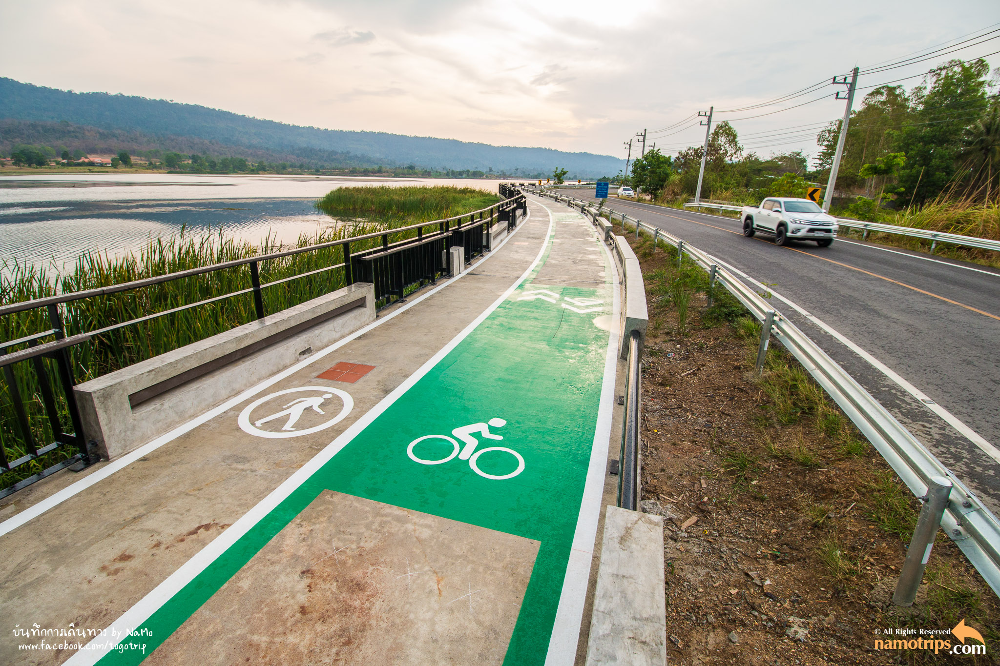
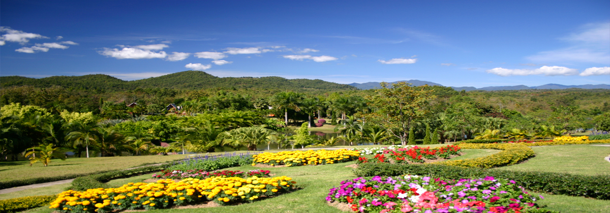
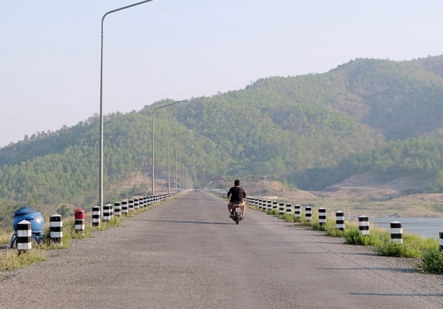
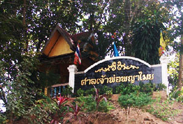

สถานที่ท่องเที่ยว
Chiangklang Nan
วัดหนองแดง (สถาปัตยกรรมไทลื้อ) ตั้งอยู่บ้านหนองแดง หมู่ที่ 1 ตำบลเปือ ห่างจากที่ว่าการอำเภอ 2 กิโลเมตร เป็นโบราณสถานเก่าแก่ของล้านนาไทย ก่อสร้างโดยช่างชาวไทยลื้อ (แคว้นสิบสองปันนา) มีอายุประมาณ 200 ปีเศษ

น้ำตกตาดม่าน ตั้งอยู่บนสันเขาเวียง(ม่อนเวียง) อยู่ในเขตแนวเทือกเขาผีปันน้ำ ทางตอนตะวันออกของภาคเหนือตอนบน ตั้งอยู่ในเขตบ้านวังทอง หมู่ที่ 3 ตำบลพระพุทธบาท อยู่ห่างจากที่ว่าการอำเภอประมาณ 11 กิโลเมตร เป็นน้ำตกที่มีจุดกำเนิดต้นลำน้ำหุย ซึ่งต้นน้ำหุยตั้งอยู่ระหว่างแนวเชื่อมระหว่างอำเภอเชียงกลาง และอำเภอสองแคว ซึ่งลำน้ำหุยมีน้ำไหลตลอดปี เพราะอยู่ในผืนป่าที่อุดมสมบูรณ์ รอยพระพุทธบาท (พระบาทตากผ้า) ตั้งอยู่บ้านเหล่า หมู่ที่ 8 ตำบลพระพุทธบาท ห่างจากที่ว่าการอำเภอประมาณ 7 กิโลเมตร เป็นโบราณสถานเก่าแก่เป็นที่เคารพบูชาองประชาชนทั่วไป โดยเฉพาะราษฎรตำบลเชียงคานและตำบลพระพุทธบาท มีอายุประมาณ 100 ปีเศษ

แก่งสะม้าเก้าบั้ง ตั้งอยู่บ้านตึ๊ด หมู่ที่ 10 ตำบลพระพุทธบาท ห่างจากที่ว่าการอำเภอประมาณ 11 กิโลเมตร มีลักษณะเป็นโขดหินและลานหินขวางกั้นลำน้ำน่าน ลดหลั่นกันไปถึงขั้นมีระยะทางยาวถึง 3 กิโลเมตร สองฟากฝั่งลำน้ำน่านมีลักษณะเป็นภูเขาและป่าไม้อุดมสมบูรณ์ เหมาะแก่การพักผ่อนและตั้งแคมป์ค้างแรม

พระธาตุดอนแก้ว ตั้งอยู่บริเวณบ้านดอนแก้ว หมู่ที่ 1 ตำบลพระธาตุ ห่างจากที่ว่าการอำเภอประมาณ 7 กิโลเมตร

อ่างเก็บน้ำเลียบ ตั้งอยู่บ้านดอนแท่น หมู่ที่ 3 ตำบลเชียงคาน ห่างจากที่ว่าการอำเภอประมาณ 8 กิโลเมตร เป็นอ่างเก็บน้ำขนาดใหญ่ รอบบริเวณอ่างร่มรื่นไปด้วยป่าไม้ธรรมชาติ เหมาะแก่การพักผ่อนและตกปลา 
ไร่จุฑามาศ รีสอร์ท ตั้งอยู่บ้านน้ำอ้อ หมู่ที่ 3 ตำบลเปือ ห่างจากที่ว่าการอำเภอประมาณ 8 กิโลเมตร 
น้ำตกผานางอิง (ฝายข้อมือเหล็ก) ตั้งอยู่บ้านพญาแก้ว หมู่ที่ 4 ตำบลพญาแก้ว ห่างจากที่ว่าการอำเภอประมาณ 6 กิโลเมตร

อ่างเก็บน้ำน้ำส้อ ตั้งอยู่บ้านส้อ หมู่ 9 ตำบลเปือ ห่างจากที่ว่าการอำเภอประมาณ 8 กิโลเมตร 
รอยพระพุทธบาท (บ้านดอนสบเปือ) ตั้งอยู่บ้านดอนสบเปือ หมู่ที่ 7 ตำบลเปือ ค้นพบครั้งแรกอยู่บนแท่นผาบริเวณวังพระพุทธบาท ปัจจุบันรอยพระพุทธบาทแห่งนี้เป็นที่เคารพนับถือของชาวอำเภอเชียงกลางและศิษยานุศิษย์ของพระครูชัยวัฒน์อธิโต

ศาลเจ้าพ่อพญาไมย ตั้งอยู่บ้านสบกอน หมู่ที่ 5 ตำบลเชียงกลาง เจ้าพ่อพญาไมยเป็นเทพยดาที่ชาวอำเภอเชียงกลางและอำเภอใกล้เคียงเคารพนับถือและเลื่องลือในความศักดิ์สิทธิ์ 